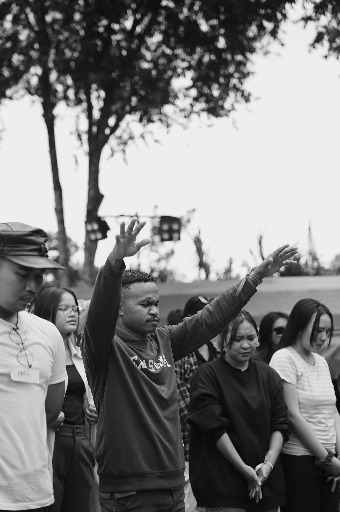
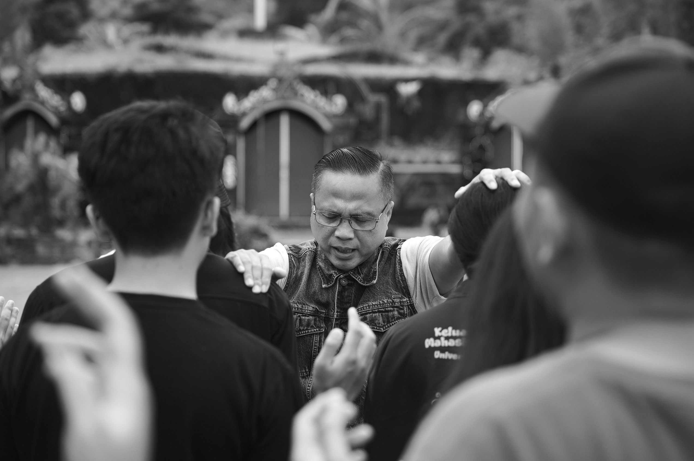

Tentang Outbond & Fellowship
Outbound & Fellowship (O&F) adalah sebuah acara kebersamaan bagi pemuda Kristen di Bali yang bertujuan untuk mempererat hubungan, membangun komunitas, dan bertumbuh bersama dalam iman.
Melalui berbagai kegiatan seperti permainan outbound, waktu persekutuan, dan aktivitas kelompok, peserta diajak untuk saling mengenal, bekerja sama, dan menikmati kebersamaan dalam suasana yang penuh sukacita.
Acara ini diselenggarakan oleh Youth Bali Partnership dan tahun ini merupakan penyelenggaraan O&F yang keempat, melanjutkan perjalanan yang sudah dimulai sejak beberapa tahun sebelumnya.
Daftar Sekarang